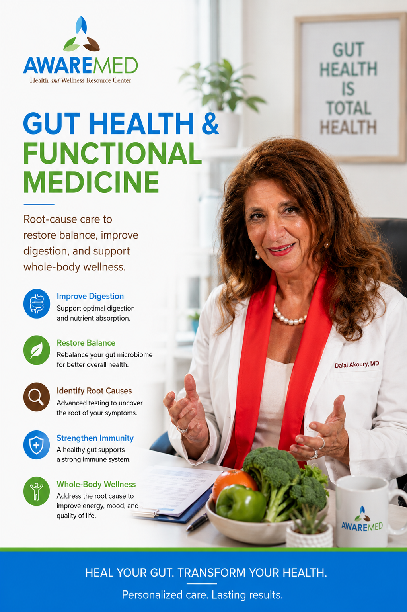

Gut Health & Functional Medicine
Root-cause functional medicine that goes beyond symptom management, restoring digestive health, balancing the gut microbiome, and supporting whole-body wellness from the inside out.

Gut Health & Functional Medicine at AWAREmed
Root-cause care to restore balance, improve digestion, and support whole-body wellness.
Improve Digestion
Support optimal digestion and nutrient absorption with personalized functional protocols.
Restore Balance
Rebalance your gut microbiome for better overall health and immune function.
Identify Root Causes
Advanced testing to uncover the root of your digestive symptoms.
Strengthen Immunity
A healthy gut supports a strong immune system and whole-body resilience.
What Is Gut Health & Functional Medicine?
The gut is often called the "second brain", and for good reason. Your gastrointestinal system influences immunity, mood, energy, hormones, cognition, and virtually every aspect of your overall health. When gut function is disrupted, through dysbiosis, inflammation, permeability issues, or digestive dysfunction, the effects extend far beyond your digestive tract.
Functional medicine takes a root-cause approach to gut health. Rather than simply managing digestive symptoms with medication, Dr. Dalal Akoury, MD investigates the underlying factors driving gut dysfunction, including diet, microbiome imbalances, infections, stress patterns, environmental exposures, and genetic factors, and designs a personalized restoration plan.
At AWAREmed, gut health care combines advanced functional lab testing with deep clinical listening and personalized therapeutic protocols. Whether you're dealing with IBS, SIBO, food sensitivities, leaky gut, inflammatory bowel conditions, or more general digestive concerns, Dr. Akoury looks at the full picture and creates a plan that addresses the root causes.
Potential Benefits
While individual responses vary and no specific outcomes can be guaranteed, this service may support:
Who May Benefit?
This service may be appropriate for individuals including:
- Those with IBS, SIBO, or inflammatory bowel conditions
- Patients with food sensitivities or intolerances
- Individuals with unexplained fatigue, brain fog, or mood disturbances
- Those with autoimmune conditions influenced by gut health
- Anyone who has taken long-term antibiotics or medications affecting gut flora
- Individuals seeking preventive and proactive digestive wellness
The Treatment Process at AWAREmed
Dr. Akoury begins with a detailed health history and symptom review, followed by comprehensive functional gut testing, which may include microbiome analysis, SIBO breath testing, food sensitivity panels, intestinal permeability markers, and comprehensive digestive stool analysis. Based on findings, she designs a personalized gut restoration protocol involving therapeutic dietary changes, targeted supplementation, microbiome restoration, and lifestyle interventions, with ongoing monitoring and adjustment.
Frequently Asked Questions
Related Services
Take the First Step Toward Better Health
Book a consultation with Dr. Dalal Akoury, MD to discuss a personalized, whole-person care plan.